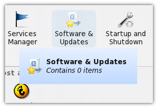
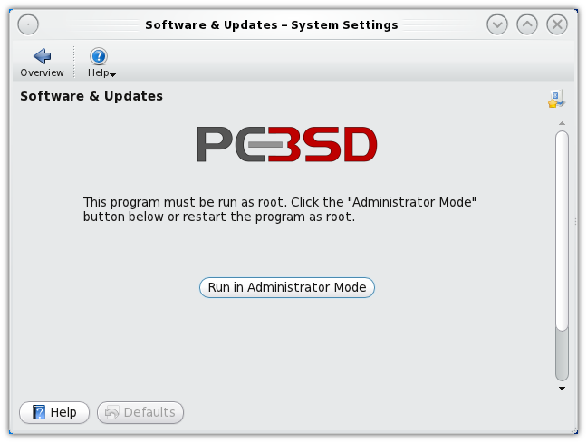
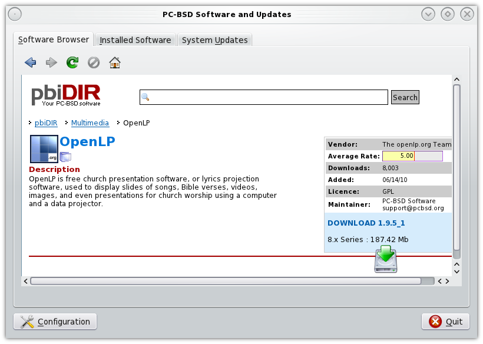
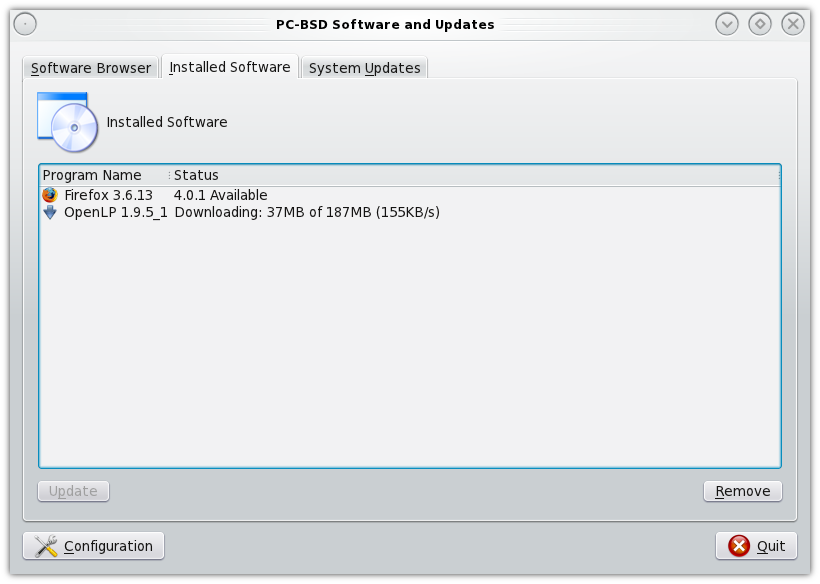

Installing OpenLP on BSD
PC-BSD
You will need to have root privileges to install OpenLP. You will be asked for the root password several times during installation.
From the KickOff Menu select System Settings. From the System Settings select Software & Updates
When prompted click on the Run in Administrator Mode button and enter your root password when asked.
Type openlp into the search box then click Search. When OpenLP is located click on Download
Confirm you want to download OpenLP. You should now be able to see the progress of the OpenLP download and installation.
When the installation has completed OpenLP will be available from the KickOff menu.